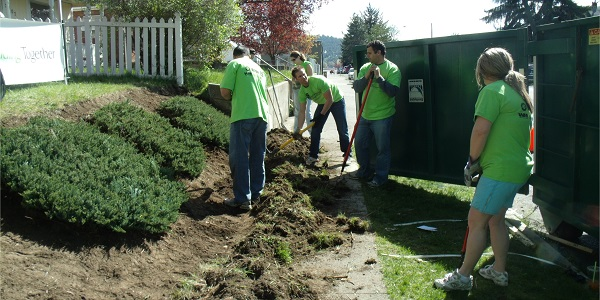

You Can Help

We are always looking for more help and volunteers.
Volunteering is an opportunity to unite people and help improve the lives of those in need. Our Organization's goal is to facilitate volunteer work and provide people in the community of Spokane the chance to serve with one another and help their community grow.
If you would like to serve your community during the next National Rebuilding Day, we would love to have you. The more people we have, the bigger difference we can make and the more people we can help. Anyone can volunteer, and if you have experience with any construction or maintenance, that's even better. Come join us and make a difference in the community of Spokane.
If you would like to volunteer, please send an email to the following email address, or click the button.
*(Please Note, you must be at least 14 years old to volunteer with Rebuilding Together Spokane)
*(We also require that you sign a minor's waiver if you are under the age of 18)